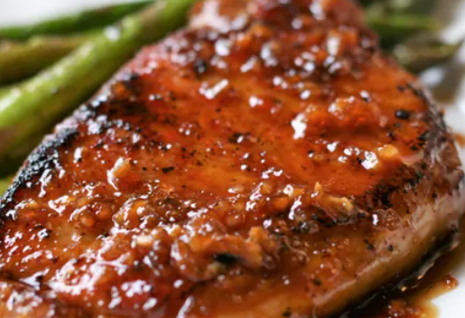

Quick and Easy Honey-Garlic Pork Chops Recipe

This is a quick and easy recipe for pork chops in a flavorful honey-garlic sauce.
Ingredients
4 (5 ounce) pork chops
salt and freshly ground black pepper to taste
1 teaspoon garlic powder
2 tablespoons olive oil
1 tablespoon unsalted butter
6 cloves garlic, minced
¼ cup honey
¼ cup water
2 tablespoons rice vinegar
Directions
Step 1:
Set an oven rack about 6 inches from the heat source and preheat the oven's broiler.
Step 2:
Season pork chops with salt, pepper, and garlic powder on both sides.
Step 3:
Heat oil in an oven-safe skillet over medium-high heat until hot. Sear pork chops until golden brown and cooked through, 4 to 5 minutes per side. Transfer to a plate and keep warm.
Step 4:
Reduce heat to medium and melt butter in the pan juices, scraping up any browned bits from the bottom of the pan. Add garlic and cook until fragrant, about 30 seconds. Add honey, water, and vinegar. Increase heat to medium-high and cook, stirring occasionally until sauce has reduced down and slightly thickened, 3 to 4 minutes. Return pork back to the skillet and baste generously with the sauce.
Step 5:
Transfer skillet under the broiler and broil until edges of pork chops are slightly charred, 1 to 2 minutes.